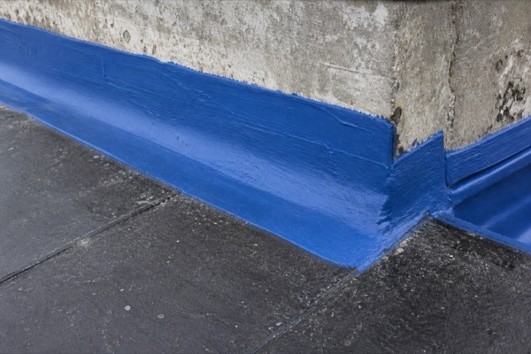
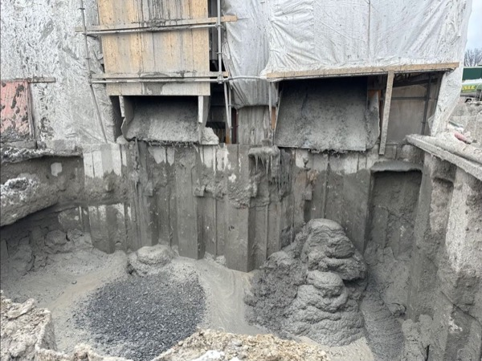
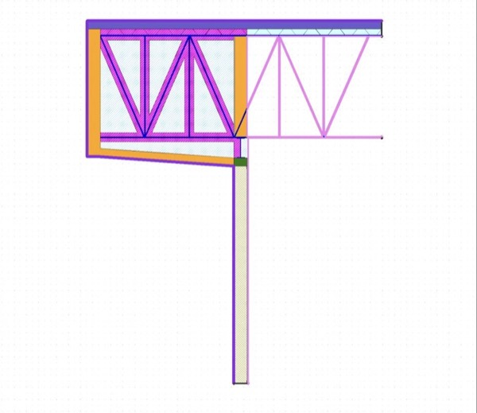
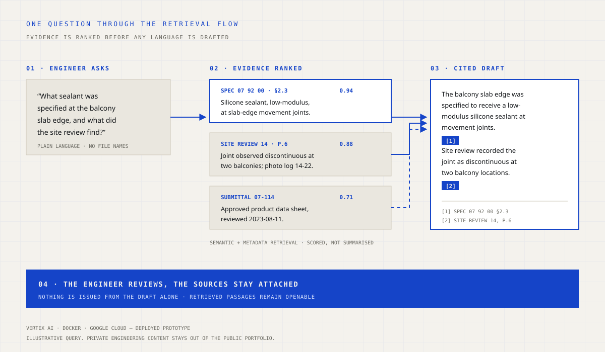
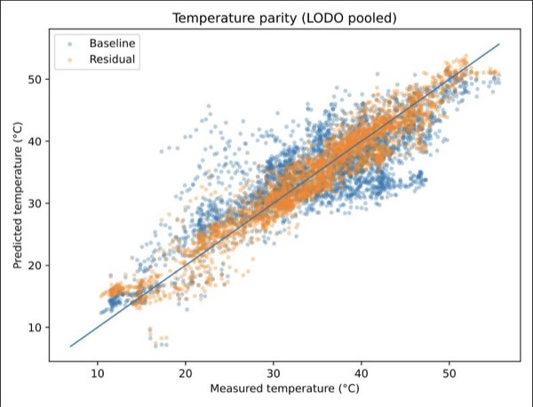
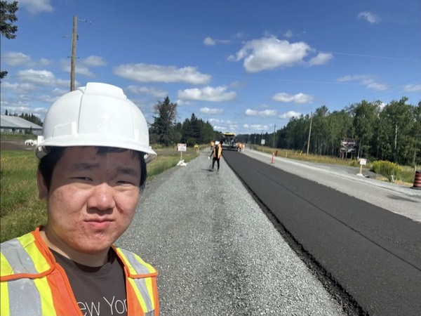
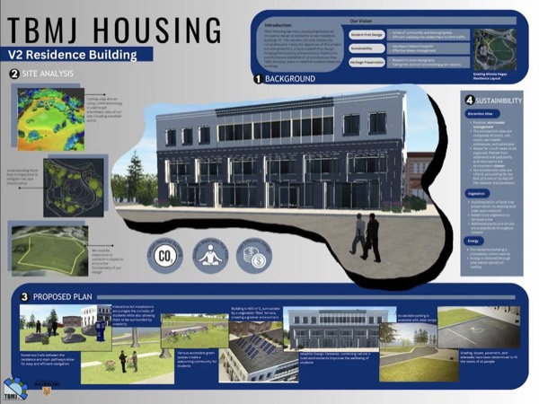
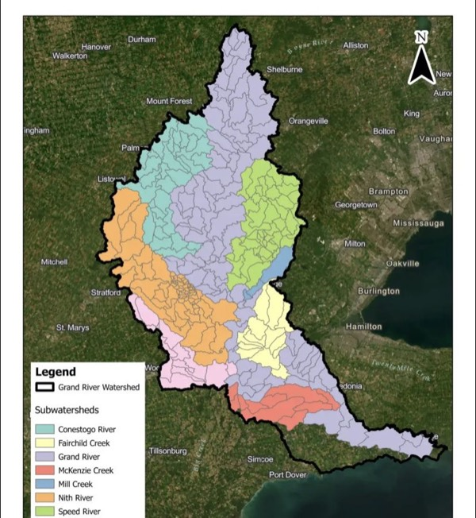

Structure. Envelope. Code.
I'm Thomas Gao, a civil engineering student at the University of Waterloo. Four co-op terms have taken me from caisson rigs on the Ontario Line to thermal models of building envelopes, and I write the software that ties the work together.
Open to co-op roles, January to April 2027
- 4.0 GPA in Civil Engineering at Waterloo, class of 2028
- Four co-op terms at Entuitive, Brown Beattie and Green Infrastructure Partners
- First-author paper in Processes, 2026
Start with the frame.
Take the cladding off and a building is a load path: slab to beam, beam to column, column to caisson. I have worked on it from both ends, in the analysis model and in the ground.
Lateral drift, exaggerated so the deflected shape is visible. An illustrative model, not a design.
- Steel frame analysis and verification A two-bay sub-frame solved in SAP2000, then re-solved with a direct-stiffness solver I wrote. The two disagreed, and the case study explains why.
- Deep foundations at Pape Station Coordinated diaphragm walls, caissons, soldier piles and lagging, and load testing on the Ontario Line.
Then the skin.
The envelope decides where the heat goes. At Entuitive I modelled junction details in Flixo, THERM and HEAT3 to get effective U-values and linear and point transmittances for BC Energy Step Code, NECB and ASHRAE 90.1, most of them twice: as built and as retrofitted.
As built: slab edges, balconies and parapets run straight through the insulation, so that is where the heat leaves.
An exterior thermogram of the model on a cold night. Illustrative, not project data.
Then the data.
A project leaves behind thousands of site photos and reports that nobody can search. I build the tools that read them: vision models that tag what is in a photo, hybrid retrieval that finds it, and language models that draft from cited sources.
ProjectSearch: find a site photo by what is visible in it
blue waterproofing membrane at the north parapet

Main roof, north parapet96% match
Blue liquid-applied waterproofing turned up the north parapet upstand, terminating on concrete.
Four sample records. The real tool pins every photo to a 3D model of the building, as the model here does. Built during my Entuitive co-op and being evaluated for engineering workflows.
- ProjectSearch Embeddings, BM25 over SQLite FTS5, rank fusion and an AI rerank, with a 3D building view and ranked floor evidence.
- Engineering retrieval and report drafting A citation-first RAG prototype over engineering documents and CAD metadata, on Vertex AI and Google Cloud.
- Travers Solar: capacity and temperature First-author paper. Automated ASTM E2848 capacity testing and a physics-first residual model in Python.
Selected work
Nine case studies. Each sets out the evidence, the method, my role and the outcome.
-

Steel frame analysis and verification
A two-bay steel sub-frame solved in SAP2000, then re-solved with a direct-stiffness solver I wrote, which disagreed.
-

Deep foundations and support of excavation
Field coordination across diaphragm walls, caissons, soldier pile and lagging, testing, quantities and as-builts.
-

Envelope thermal-bridge studies
2D steady-state studies of roof-to-wall and balcony-slab junctions across existing and retrofit insulation.
-
ProjectSearch
Index an engineering photo share, then search it in plain English by what is visible in the image.
-

Engineering retrieval and report drafting
A deployed, citation-first RAG prototype for engineering documents and CAD metadata, containerised for Google Cloud.
-

Travers Solar: capacity and temperature
Automated ASTM E2848 capacity-test selection and a physics-first residual temperature model, published in Processes.
-

Highway design and pavement QC
Civil 3D design support for two highway redesigns, plus field and laboratory QC on Superpave and CIREAM work.
-

Residence site redevelopment
Civil 3D drawing and grading lead, accessible circulation planning and research for a team design package.
-

Grand River watershed analysis
An ArcGIS Pro workflow on a 30 m DEM: flow processing, stream extraction, basin delineation, land use and soils.

Experience
Waterloo alternates four-month study and work terms, so these dates interleave with school rather than leaving gaps. Each entry describes the scope of the work, not credit for its outcomes.
-
May – Aug 2026Vancouver, BC
Building Envelope Specialist, co-op Entuitive
- 2D and 3D thermal modelling in Flixo, THERM, HEAT3 and Ubakus: effective U-values and linear (ψ) and point (χ) transmittance for BC Energy Step Code, NECB and ASHRAE 90.1 compliance. Junction details across several project teams, most modelled in both existing and retrofit configurations.
- Site Review Reports documenting construction conformance: annotated photo logs, deficiency registers and follow-up tracking.
- Building Condition Assessments and Depreciation Reports for BC Housing and private clients: component inventories, condition ratings and 30-year capital renewal cost models.
- Built ProjectSearch, a local-first photo and document retrieval prototype being evaluated for engineering workflows.
-
Sep – Dec 2025Richmond Hill, ON
Engineering Technician, co-op Brown Beattie
- Site inspections across concurrent restoration sites: waterproofing and concrete repair, surface preparation, CSP profiles, adhesion and membrane thickness per OBC, CSA and manufacturer standards.
- Ran envelope rehabilitation projects from tender review through substantial performance, including mock-ups and submittal and shop drawing review.
-
Jan – May 2025Toronto, ON
Project Coordinator, co-op Green Infrastructure Partners
- Coordinated deep foundation and shoring operations for Pape Station on the Ontario Line: diaphragm walls, caisson drilling, soldier pile and lagging, O-cell load testing and tieback anchor testing. Tracked RFIs, RFQs and submittals across the below-grade scope.
- Sequenced excavation and support of excavation to MTO, CSA and Ministry of Labour requirements, with field reports, as-builts and quantity summaries.
-
May – Aug 2024Thunder Bay, ON
Quality Control Technician, co-op Green Infrastructure Partners
- Field and lab QC on Superpave and CIREAM materials to MTO, OPSS 1150, ASTM and AASHTO standards: Lottman (AASHTO T283), Marshall stability and flow, bulk specific gravity.
- Independently managed QC for the MTO Highway 17 and 61 rehabilitation near Thunder Bay; mix optimisation through gradation, binder content and foaming parameter analysis.
Education
Bachelor of Applied Science, Civil Engineering
- Cumulative GPA of 4.0
- President's Scholarship of Distinction, 2024
- On international exchange in Singapore for the fall 2026 term
Peer-reviewed publication, first author
Gao, T., et al. Capacity Regression and Temperature Prediction for Canada's Largest Solar Facility, Travers Solar, Alberta. Processes 2026, 14(7), 1078.
Tools
Underlined tools open the case study that demonstrates them.
- Structure
- SAP2000, direct stiffness in Python, SkyCiv, Rhino, Grasshopper. Plane-frame and truss analysis, influence lines, hand verification of software output.
- Envelope
- Flixo, THERM, HEAT3, Ubakus. Thermal bridging and condensation analysis, air and vapour barriers, EIFS, PMMA and SBS waterproofing.
- Code and AI
- Python, NumPy, SQL, MATLAB, VBA, three.js, SQLite FTS5, Vertex AI, Docker, Google Cloud.
- Civil
- AutoCAD, Civil 3D, ArcGIS Pro, PVSyst, Revit, Bluebeam Revu, advanced Excel.
- Codes
- NBC, OBC, BCBC, BC Energy Step Code, NECB, ASHRAE 90.1, CSA A23.1, A23.3, S16 and A440, MTO OPSS, ASTM, AASHTO.
Off site
Photography keeps me looking closely at texture, movement and light. Five frames from my own archive.
Put me on your next project.
I'm looking for a co-op role from January to April 2027 with a structural, building envelope or engineering software team.
t25gao@uwaterloo.caThomas Gao, 2026. The model is drawn live in your browser; this site loads nothing from third parties.